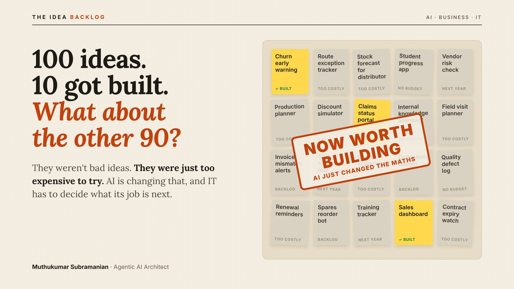

100 Ideas. 10 Got Built. AI Just Changed What Happens to the Other 90.
By Muthukumar Subramanian · Agentic AI Architect

Every company I've worked with has a graveyard.
It isn't a list of failed projects. It's a list of projects that never started.
"Can we get a tool that flags customers who are quietly buying less?" Not this quarter.
"Could we forecast stock for our top 50 dealers?" Raise a request.
"What if the field team had a simple visit planner?" No budget.
None of these were bad ideas. They were just too expensive to try.
I've been in IT for 25 years, at Infosys and then as a consultant and fractional executive, across everything from legacy systems to agentic AI.
Across all of it, the journey from idea to software has looked almost the same. The business person explains the problem to an analyst. The analyst writes requirements. IT reads the requirements, builds something, tests it and sends it back. The business person looks at it and says, "Hmm. That's not quite what I meant."
Nobody did anything wrong. Moving an idea from one person's head into another person's code is just hard, and every handoff loses a bit of it.
That chain is getting shorter.
Today a sales manager can open an AI tool and type:
"Show me customers whose spending has dropped over the last three quarters, group them by risk, and let me filter by region and product."
A few minutes later there's something working on screen. It's rough, but it's real.
Then she says, "Add a forecast. What happens if we offer 10% off to the high-risk group?" And it changes while she watches.
She didn't write a requirements document, and she doesn't know what a database schema is. She simply understood her problem better than anyone else, and that turned out to be the more important skill.
AI writing code isn't the real story
The real story is that trying an idea has become cheap.
Think of it this way. A department comes up with 100 ideas a year. Maybe 10 get serious attention, because each one needs requirements, effort estimates, development, testing, maintenance and a budget approval.
The other 90 never get tested. Nobody ever finds out whether they were good.
When a first working version costs a few hours instead of a few months, that maths changes. You don't argue about an idea for a quarter. You build a rough version on Tuesday and know by Friday.
Now for the uncomfortable part
If business users can build things themselves, what happens to IT?
I'll be honest. Some of today's work is going to shrink: simple dashboards, basic data-entry screens, small internal tools, routine integration code. If your business model depends on billing for that kind of work, the next few years will be difficult.
But I don't think the overall pie gets smaller. I think it gets much bigger, and here's why.
Say a custom internal tool costs ₹10 lakh today. Only a few teams can justify that. (These numbers are only illustrative.)
Now say a sensibly scoped version costs ₹2 lakh. Suddenly:
→ The department that waited two years for central IT can fund its own pilot
→ The mid-size distributor can finally get forecasting built around its own business
→ The school, the logistics firm and the 40-person manufacturer stop forcing their work into spreadsheets
Each project is cheaper, but there are far more of them.
Cheaper doesn't mean smaller. Often it means more.
The prototype is the easy part
Twenty-five years of watching systems go from demo to production has taught me one thing above all: a demo that works is not a product that works.
AI will happily give you a nice screen that has no access control, breaks on the first odd input and quietly gets a business rule wrong.
So the real questions are moving somewhere else:
- Is it solving the right problem?
- Is the data correct, and who's allowed to see it?
- What happens when 200 people use it at once?
- Does it meet our compliance rules?
- Who looks after it when the person who built it leaves?
That last one is going to hurt. Imagine 500 employees, each building small apps. Within a year you'll have hundreds of tools that nobody fully understands, connected to data nobody remembers approving.
I've spent a good part of my consulting career cleaning up legacy systems: software that was built quickly, kept running for years, and slowly became something nobody fully understood. AI-built apps could create the next generation of that problem, only much faster.
We're about to go from a shortage of software to too much of it, and managing that will be the new headache.
So what's IT's job now?
Less translating, more enabling.
The IT teams that do well won't be the ones guarding the backlog. They'll be the ones building the safe space where everyone else can build: approved data sources, ready-made components, automated security and quality checks, proper deployment, monitoring and a way to roll back, plus clear rules about who owns what.
Business people bring the problems. IT makes sure what they build can be trusted.
I genuinely think that's a bigger and more interesting job than the old one.
The question I keep coming back to
Everyone asks, "How many developers will AI replace?"
I think a more useful question is:
"How many good ideas did we never build because building them cost too much?"
Every company has that list. It's long, and it's about to become affordable.
Whether that turns into a cost-cutting story or the biggest wave of business innovation we've seen depends on what we build next, and how carefully we build it.
Curious where you land on this 👇
Will AI shrink the IT services market, or will all those unbuilt ideas make it much bigger than it is today?